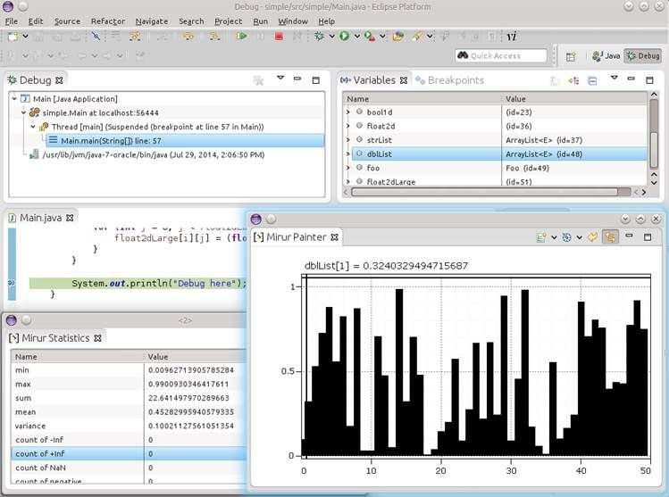

Mirur is an Eclipse plugin (http://mirur.io/update-site/) to visualize Java objects while debugging. No more using Arrays.toString()! The existing visual debugger in Eclipse does a .toString() on any object you select in the Variables view. For large arrays, this might mean hanging Eclipse. Plus, looking at a long list of values is generally useless.

Mirur uses OpenGL to create highly interactive plots — line and bar charts, histograms, 2-dimensional heatmaps, images, arbitrary shapes ...
{kind=link}
Numeric Arrays
- any native array, e.g. int[], boolean[]
- arrays of Number, e.g. Double[], Float[]
- arrays of AtomicLong and AtomicInteger
- even collections of Number, e.g. List<Short>
- sort in realtime, or get a histogram of values
{kind=link}
Images
- java.awt.BufferedImage
- any java.awt.Image
- any javax.swing.Icon
- any java.awt.Shape (drawn with vector rendering)
{kind=link}
Buffers
- java.nio.ByteBuffer
- java.nio.IntBuffer
- java.nio.FloatBuffer
- java.nio.DoubleBuffer
- any java.nio.Buffer
{kind=link}
Heatmaps
- 2-dimensional primitive arrays
- short[][], float[][], ...
- large (even up to 50MB) arrays transfered very quickly
This is an example of an active debug session using Mirur.
Try it now in Eclipse 3.7+
Install directly from http://mirur.io/update-site/ or from the Eclipse Marketplace